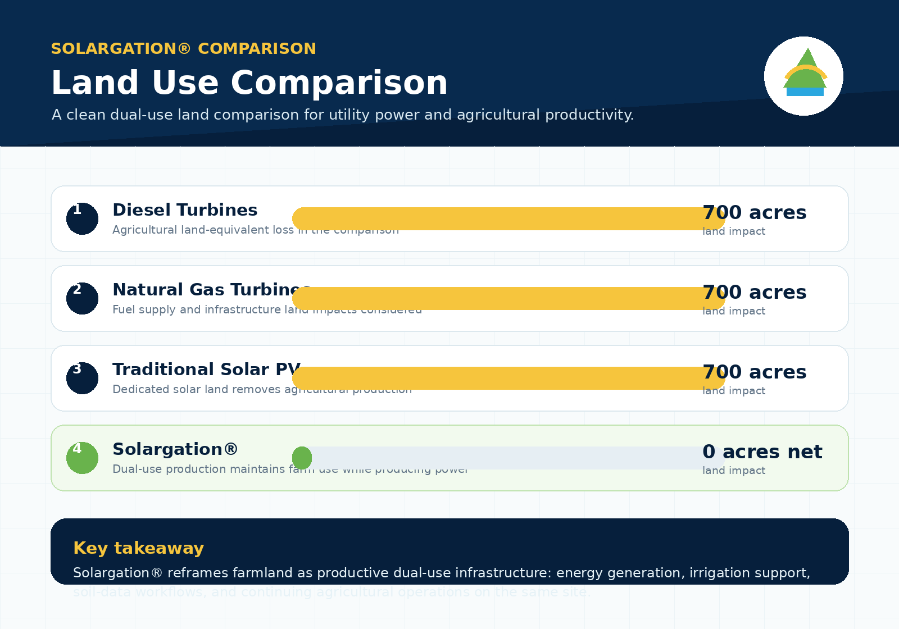

1
Traditional solar PV
Direct site footprint: approximately 400 acres..
Farm productivity on occupied land: None possible due to solar densities
-400
acres lost
A land-equivalent comparison for a 100 MW project on farmland shows how traditional solar, agrivoltaic design, fossil generation footprints, and crop-enhancing Solargation® change agricultural productivity.
Net agricultural land-equivalent loss = gross project acres × (1 − retained farm productivity).
The table-style cards below convert each technology into an agricultural land-equivalent impact, using the assumptions in the right-hand panel.
Direct site footprint: approximately 400 acres..
Farm productivity on occupied land: None possible due to solar densities
Direct site footprint: approximately 700 acres.
Farm productivity retained: approximately 70%–90% in the case.
Direct site footprint: approximately 12 acres.
Farm productivity on occupied land: 0%, with additional dispersed upstream oil, refining, and transport land impacts.
Direct site footprint: approximately 11 acres.
Farm productivity on occupied land: 0%, with upstream wells, gathering, pipelines, and compressor-station land impacts.
Direct site footprint: approximately 700 acres at 7 acres per MW.
Farm productivity enhanced: approximately 110%–150% of baseline in the case, depending on crop type and management practices.
Fossil technologies can appear land-light at the power-plant site, but they also rely on upstream land for fuel extraction, processing, and transport. Agrivoltaic and Solargation® productivity values are illustrative and depend on crop type, design, climate, and farm operations.
The land-use advantage is not only putting panels above crops. It is using the same infrastructure to preserve or improve output through shade, irrigation, microclimate, and data-enabled material dispersal.
Solargation® is intended to preserve and improve farm output through dual use, microclimate support, water efficiency, irrigation integration, and data-driven material dispersal.
Sources noted in the provided land-use graphic: NREL utility-scale PV land use; Jacobson / Stanford land-footprint compilation for fossil power plants; recent agrivoltaic review reporting land-use efficiency gains up to 200%; University of Arizona / Barron-Gafford agrivoltaic field results showing higher yields for some crops and lower transpiration.

Solargation® creates a clear benefit to farmers, the land, and resiliency for food. Energy can cooperate with Food creation.
Back to top